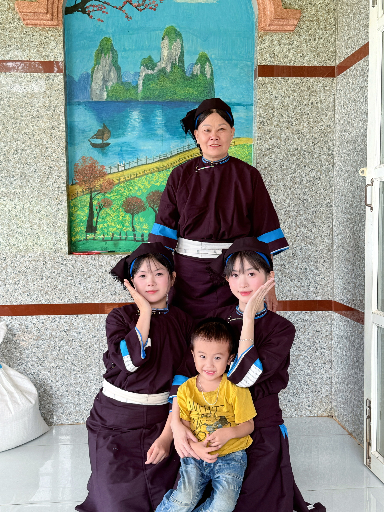
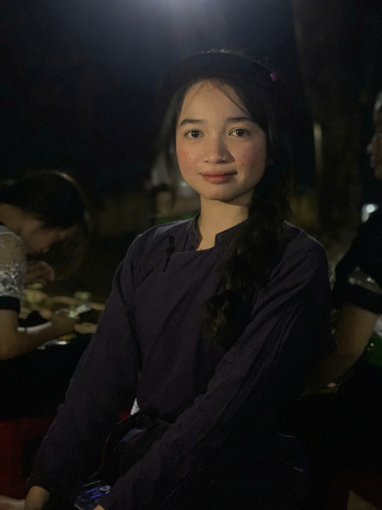
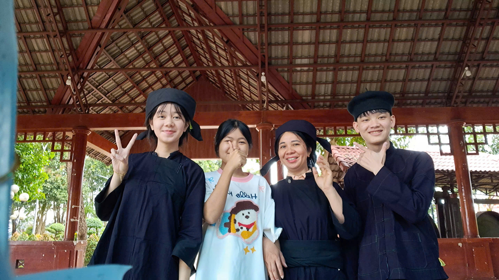

Dân tộc Nùng
  Trang phục dân tộc Nùng giản dị mà trang nhã, chủ yếu màu chàm, kiểu dáng gọn gàng, thể hiện lối sống cần cù và nét văn hóa truyền thống của người Nùng vùng núi phía Bắc. Chất liệu: chủ yếu là vải bông, vải chàm tự dệt → mặc mát, bền, hợp sinh hoạt núi rừng. Màu sắc: tone xanh chàm, đen là chủ đạo, ít hoa văn, nhìn trầm mà sang. Nữ: áo năm thân hoặc áo xẻ ngực, cổ tròn/cổ đứng, váy hoặc quần, thắt lưng vải; tóc vấn gọn, có thể đội khăn. Nam: áo ngắn hoặc dài, quần ống đứng, kiểu dáng đơn giản, tiện lao động. Trang trí: không cầu kỳ, chủ yếu là đường may khéo, đôi khi có thêu nhỏ ở cổ áo hay tay áo thôi. Trang phục Nùng mang vẻ đẹp giản dị, bền chắc với gam chàm trầm, thể hiện lối sống mộc mạc và tinh tế của người miền núi.